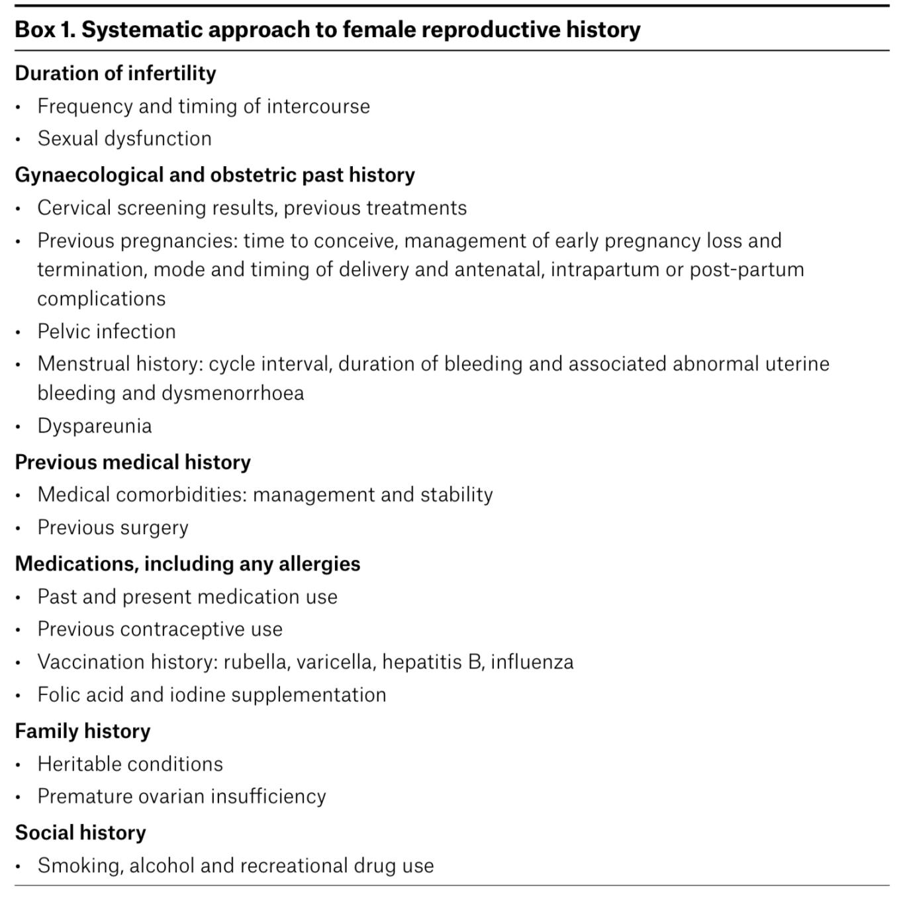
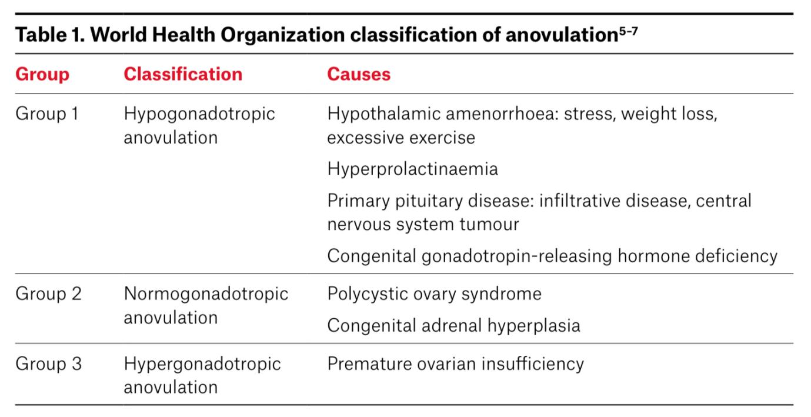

INFERTILITY
Your next patient is a 27 year old lady who has presented to your General practice concerned as she is unable to get pregnant.
Task:
- Take history for 5 minutes
- Physical examination will appear on the screen
- Explain your diagnosis with reasons
Positive Findings From Case
- Regular periods
- On COPs for many years, stopped 1 year ago
- 1 previous partner
- Doesn't time intercourse
- No hirsutism
- No abnormal bleeding, dyspareunia
- History of surgery: Appendectomy when she was 10y
- Partner not done sperm analysis before
General Concept
- In infertility, you look for female infertility and male infertility.
- Male: just needs sperms to run and activate the pregnancy.
- Female: needs full function of hormones, ovaries, tubes, uterus → most differentials fall into female infertility causes.
Physical Examination
- Recall said BMI is 24.
- Assumption: physical examination will be normal.
Definition of Infertility
Young lady (<35 years)
- Trying for 12 months
- Must be properly trying → regular unprotected intercourse for 12 months
- If no pregnancy → infertility
Lady ≥ 35 years
- 6 months is enough
- Because of concerns of ovarian reserve and many problems
- Do not wait the full 12 months.


Differential Diagnosis Framework (Three-Phase System)
Group 1 — Brain
- Hypothalamic problems
- Excessive stress
- Eating disorders (e.g., anorexia nervosa → severe weight loss)
- Excessive exercise
- Excessive stress
- Hyperprolactinemia
- Thyroid disorders
- Hyperthyroidism
- Hypothyroidism
- Hyperthyroidism
Group 2 — Ovaries, Tubes
Ovaries
- POF (Premature Ovarian Failure)
- PCOS
Tubes
- Tubal disease
- Pelvic adhesions
- Caused by chlamydia
- Caused by gonorrhea
- Caused by endometriosis
- Caused by intra-abdominal surgery (adhesion bands)
- Caused by chlamydia
Group 3 — Uterus and Sex
Uterus
- Fibroids (large ones interfere with implantation)
- Cervix problems
- Surgeries or procedures → trauma
- Stenosis → sperm will not enter
- Surgeries or procedures → trauma
- Intrauterine adhesions
- Common after surgical terminations of pregnancy
- Common after surgical terminations of pregnancy
Sex
- Proper sex is required for pregnancy
- Male infertility
- Problems (chromosomal, congenital, genetic, chronic health conditions) → affect sperm
- Undescended testes → not functioning → no appropriate sperms
- Sexual dysfunction
- Timing issues
- Problems (chromosomal, congenital, genetic, chronic health conditions) → affect sperm
Other Causes
- Chronic medical conditions → infertility
- Chronic liver disease
- Chronic kidney disease
- Chronic liver disease
- Medications
- Contraception (covered above)
- Corticosteroids
- Antidepressants (some references mention)
- Contraception (covered above)
- Autoimmune conditions
- Celiac (increases rate of infertility)
- SLE
- Other autoimmune conditions
- Celiac (increases rate of infertility)
Your next patient is a 27 year old lady who has presented to your General practice concerned as she is unable to get pregnant.
Task:
- Take history for 5 minutes
- Physical examination will appear on the screen
- Explain your diagnosis with reasons
1. Intro Phase
- Start with a proper open-ended question:
“How can I help you today?” or “What brings you in today?”
→ Patient says she has been trying to fall pregnant with her partner, unsuccessful, worried. - Address her concern with your established statement:
“I understand your concern. I understand how stressful this can be. If it’s okay, I’ll ask you a few questions, I’ll examine you, try to find the cause, and make the best management plan for you.”
2. Explore the Complaint – Infertility
- How long have you been trying to fall pregnant?
- Have u had any Previous pregnancies for the lady.
- For the partner:
- Ask sensitively:
“My apologies to ask, but by any chance, has your partner had children in his previous relationships?”
- Ask sensitively:
Male Infertility Screening (done early to get it out of the way)
- Has your partner ever been checked for infertility?
- Has he ever done a sperm test or sperm analysis?
- Any chronic health conditions or medical conditions?
Sex & Intercourse
- Any difficulty or problems with sex or intercourse?
- Are you aware of the fertile period?
- Frequency of sex with your partner?
- Old case example: partner works in mines, FIFO, 4 week work 1 week at home → difficulty falling pregnant.
Psychological Impact
- How has this been affecting you and more importantly your relationship?
3. Five Ps History
P1: Period History
- When was your last period?
- Are your periods regular?
- How long are your cycles?
- Looking for problems:
- Heavy bleeding (fibroids)
- Excessive severe pain (endometriosis)
- Irregular bleeds between periods
- Heavy bleeding (fibroids)
P2: Partner
- Do not ask “Are you sexually active?”
- Are you in a stable relationship?
- Is the partner supportive?
- Extra questions placed here:
- Dyspareunia
- Bleeding after intercourse
- History of STIs
- Dyspareunia
P3: Pills
- Have you ever used any contraception?
- If yes: When did you stop it?
- (Depo may cause delay in return of fertility)
- (Depo may cause delay in return of fertility)
P4: Pregnancy History
- Already asked earlier (usually no).
- Also ask:
- Any surgeries on the womb or uterus?
- Any surgeries on the abdomen? (adhesions)
- Any surgeries on the womb or uterus?
P5: Pap Smear (Cervical Screening Test)
- Have you done your cervical screening test? Was it normal?
- Any previous surgeries or procedures on the cervix or mouth of the womb?
4. Differential Groups
A. Brain Problems
Hypothalamus
- Any stress at work or home?
- Eating disorders?
- Excessive exercise?
- Fasting?
- Loss of weight?
- Optional bulimia question:
“Do you try to lose weight by inducing vomiting?”
Prolactinoma
- Headaches?
- Blurring of vision?
- Milky discharge from breast or nipples?
Thyroid
- Weather preference? Cold or heat intolerance?
B. Ovaries
Premature Ovarian Failure
- Hot flushes?
- Family history of premature ovarian failure?
PCOS
- Excessive hair growth on face or body?
- History of acne?
- Weight gain?
C. Tubes
- Already asked: previous abdominal surgeries → adhesions
- Endometriosis:
- Pain on passing urine or stools
- Blood in urine or stools
- Dyspareunia (already asked)
- Pain on passing urine or stools
D. Autoimmune Conditions
- Celiac disease: chronic diarrhea
- SLE: rashes, joint pain
5. Other History
- Smoking
- Alcohol
- Drugs
- Any chronic medical condition?
- Any medication for that condition?
7. History Findings
- Regular periods
- On COPs for many years, stopped 1 year ago
- 1 previous partner
- Doesn't time intercourse
- No hirsutism
- No abnormal bleeding, dyspareunia
- History of surgery: Appendectomy when she was 10y
- Partner not done sperm analysis before
8. Diagnosis Explanation to Patient
Most likely cause of this problem that u r not falling pregnant is:
- Adhesion bands in your stomach
- Not aiming for fertile period
Explain adhesion bands
- After abdominal surgeries (appendix in her case) bands form in the stomach.
- These interfere with normal function/movement in the tubes.
Explain fertile period
- It is usally Day 10–17 of cycle
- 4–5 days before mid-cycle, 2–3 days after
- Highest chance of pregnancy
- Advise intercourse every other day during this period
9. Investigations (if they ask)
- FSH and LH (day 2–4)
- TSH
- Prolactin
- Androgen studies (testosterone, free androgen index)
- Transvaginal ultrasound
- Anti-Mullerian hormone (AMH) for ovarian reserve
- Sperm analysis